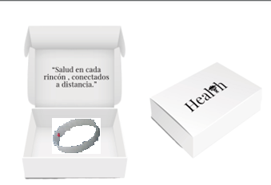

|
| ||
Que es el proyecto HEALTH? |
|
|
Hoy en día hay miles de personas de escasos recursos o marginadas de la sociedad, con posibilidades casi nulas de recibir servicios básicos indispensables en la vida cotidiana En casos extremos o de urgencia para algunas personas no es posible recibir atención médica, ya sea por la dificultad de llegar dichas instituciones o por el dinero. Nosotros pensamos en una solución de fácil acceso para todo tipo de persona, la primera es una aplicación web para citas virtuales con médicos expertos a cualquier hora del día en cualquier día, enfocándose en la atención al cliente con una interfaz fácil e intuitiva que va de la mano con una pulsera multiusos innovadora que contara con sensores para la medición de diferentes datos médicos de manera virtual que ayudaran al especialista a determinar el mejor tratamiento para el paciente , estas en conjunto te brindan la posibilidad de tener atención medica donde sea que se encuentre a las 24 horas del día mediante bluetooth para mandar los datos al celular o pc en el que se este haciendo la videollamada, contara con entrada tipo C para la carga de la misma. |
 |
Prototipo De Lo Que Esperamos Que Sea La Pagina Web De Health